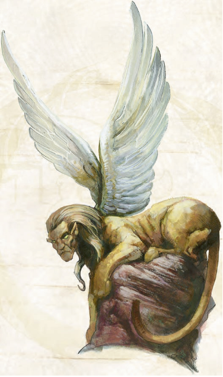

烦絮狮芬斯（Loquasphinx）
CR8
大型魔法兽
一头肌肉强壮、长着一张奇怪人类面孔的狮身怪物，带着不可思议的智慧用它神秘的绿眼睛凝视你。你能发现它硕大的躯干是棕色的，但沿着身体能看到狭长暗淡的黑色条纹，而它的肩膀后方则长有一对羽翼。在它张嘴说话之前，你仅有一刹那能注视到它那利刃般的牙齿――紧接着你就会感受到世间本质以你意想不到的速度忽然压入你脆弱的心灵。

|
生命骰: |
11d8+44
(93 hp) |
|
先攻: |
+1 |
|
速度: |
40英尺(8格),飞行80尺(不良) |
|
防御等级: |
22（-1体型+1敏捷+12天防）接触10，措手不及21 |
|
基本攻击/擒抱: |
+11/+20 |
|
攻击: |
爪抓+15近战（1D6+5） |
|
全力攻击: |
2爪抓+15近战（1D6+5）及啮咬+13近战（1D8+2） |
|
面宽/触及: |
10尺/5尺 |
|
特殊攻击: |
猛扑，耙抓，真言急转弯，言灵 |
|
特殊能力: |
黑暗视觉
60尺，昏暗视觉 |
|
豁免: |
强韧
+11，反射
+8，意志
+7 |
|
属性: |
力量
20，敏捷
13，体质
18，智力
22，感知
14，魅力
15 |
|
技能: |
专注+18（+22防御式咏唱），交涉+18，知识（任意两种）+20（+22真名研究）， 聆听+16，察言观色+16，侦查+16，真名咏唱+25 |
|
专长: |
战斗施法，钢铁意志，多重攻击，真名研究 |
|
地域: |
温带沙漠 |
|
组织: |
单独 |
|
挑战等级: |
8 |
|
宝物: |
标准 |
|
阵营: |
始终绝对中立 |
|
进化: |
12-16HD（大型）17-33HD（超大型） |
|
等级调整: |
+6 |
烦絮狮芬斯是一种罕见生物，它们也是如饥似渴的真言学者。它们大部分时间都窝在荒漠高原或丘陵中的巢穴中研究周围的世界，设法增加自己的真言词汇。通常它们热衷独处，不过不论是书籍还是博学之人，都能让烦絮狮芬斯活跃地四处探寻这些珍藏知识。
与其他狮芬斯不同的是，烦絮狮芬斯有两种性别，但它们并不需要寻找异性交配。此外它们都是打交道的行家，聪明的生物甘愿分享趣闻轶事或是一些情报，来避免与烦絮狮芬斯起冲突。某些烦絮狮芬斯甚至因为浩瀚知识，以及乐于用分析道具言灵为他人鉴定魔法物品而广受欢迎。不过即使是最友好的烦絮狮芬斯，也不愿意让任何人免费使用它的能力，而且众所周知，这种生物非常乐于讨要好处――不过用知识和消息贿赂它比黄金之类的贵重物件更容易让它接受。
烦絮狮芬斯长约9�眨�体重在500到750磅之间，它会说通用语及任意六种其他语言，每头烦絮狮芬斯会说的语言各不相同。
战斗
烦絮狮芬斯通常只有在迫不得已的情况下才会攻击――不过其他生物如果有任何它想要的，食物、金钱或者是它最热衷的情报，烦絮狮芬斯也会出手。它们倾向于空中作战，在60�辗段�内盘旋以语言削弱对手；烦絮狮芬斯会持续保持真言急转弯的压迫，每当有一个生物中招，它就会改换目标。如果它发现自己的话语毫无效果，或者敌人中有真名使用者可以对抗它的能力，烦絮狮芬斯就会选择贴身肉搏。
耙抓 (Ex): 攻击检定+12近战，伤害1D6+2
真言急转弯 (Su): 烦絮狮芬斯是真言的大师，它们会以最纯粹的语言对猎物进行连续谜语轰炸。每轮以一个自由动作，烦絮狮芬斯能对一个60�漳诘纳�物提出真言谜题，该生物是否知晓答案无关紧要，因为烦絮狮芬斯的话语中充斥着真言的力量，只要该生物没有通过一个DC17的意志豁免检定，将困惑3轮；豁免DC基于魅力。
言灵 (Sp):
心智演化之语:
4：法术重生;
3：中度润物之言;
2：西风之速;
1：骑士精神.
天工造物之语:
2：金属振动,
分析道具.
完美世界之语:
1：震荡波.
真名师等级10
技能:烦絮狮芬斯天生就能感应到世界上的真名，并在真名咏唱检定上有+4的种族加值。
艾伯伦的烦絮狮芬斯：
艾伯伦的烦絮狮芬斯住在希恩德瑞克的沙漠中，在塔兰塔平原的刀锋沙漠也能找到一些。一个叫加瑟隆（the
Ghatharon）的半身人部落与一头名为萨拉乌蒙夸塔尔（Stheravimalquataram）结成友好联盟，这个消息在欢聚堡的一次板条聚会上传开了，所有的塔兰塔半身人都知道了要尊重（还有避开）烦絮狮芬斯。
费伦的烦絮狮芬斯：
烦絮狮芬斯在艾诺奥克沙漠和穆尔霍兰德最为常见，传闻中它们死守着落烟沙漠的几处废墟。而一个名为维拉夸塔特伦（Velaquateraturin）的七级烦絮狮芬斯真名师的家，就在艾诺奥克沙漠中的弯刀锋山脉。